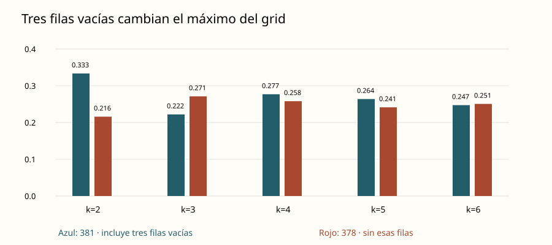
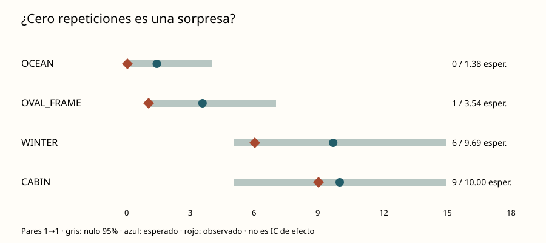

Bob Ross antes de los datos: los paisajes que conoció y los que enseñó a imaginar
Antes de enseñar a pintar en televisión, Bob Ross pasó veinte años en la Fuerza Aérea estadounidense. Nació y creció en Florida, pero durante su servicio fue destinado a Alaska: allí tomó clases de pintura y trabajó con paisajes que después aparecerían en su repertorio. La nieve, las montañas y los bosques tienen así un antecedente biográfico documentado; todavía queda por estudiar cuánto explica ese antecedente de lo que vemos en sus cuadros. Fuente: Departamento de Asuntos de los Veteranos.
La televisión convirtió el paisaje en una clase. The Joy of Painting se emitió originalmente entre 1983 y 1994. Nuestro archivo abarca 403 episodios de 31 temporadas; identifica 381 sin invitado y 22 con invitado. Entre quienes tomaron el pincel estuvo su hijo Steve Ross. Esto importa: el catálogo no es una colección homogénea de decisiones de una sola persona. Además, un paisaje debía poder enseñarse dentro de un programa de aproximadamente media hora. Periodo documentado por el Smithsonian; conteos y autoría declarada en el archivo auditado.
La rapidez tenía una técnica detrás. Ross aprendió de William Alexander el método de óleo húmedo sobre húmedo: aplicar pintura sobre capas aún frescas permite completar una escena sin esperar a que seque cada capa. Por eso, al investigar sus motivos, también debemos considerar qué paisajes resultaban adecuados para enseñar esa técnica. Es una explicación que habrá que contrastar, junto con la memoria de los lugares donde vivió. Fuente: biografía de Bob Ross Inc.
Un episodio no equivale a un único cuadro físico. El Smithsonian conserva tres versiones de On a Clear Day, de 1988: el estudio que sirvió de referencia, la pintura realizada durante la grabación y la versión para el libro. Este caso documenta preparación y variación de una misma composición; no permite afirmar que las tres versiones de cada episodio estén localizadas. Estudio · grabación · libro.
La enfermedad pertenece a su historia, pero todavía no explica los datos. Ross murió de linfoma en 1995. La tabla no contiene su estado emocional, datos clínicos ni fechas de creación de cada obra. Las fechas del diagnóstico discrepan entre relatos secundarios: no podemos convertir cuadros oscuros o escenas invernales en indicadores de tristeza o enfermedad. Fuente biográfica · discrepancias y límites documentales.
Su legado está repartido entre empresa, familia y museos. Bob Ross Inc., fundada por Bob y Jane Ross junto con Walt y Annette Kowalski, fue parte del litigio promovido por RSR Art, empresa vinculada a Steve Ross. La resolución judicial de 2019 favoreció a Bob Ross Inc. respecto de los derechos discutidos. La empresa declaró en 2021 que la apelación terminó tras un acuerdo; es una fuente parte del conflicto, y no afirmamos aquí que exista hoy una causa abierta. Propiedad de un lienzo, derechos de reproducción y uso comercial del nombre son cuestiones distintas. Resolución judicial · declaración de la empresa.
El Smithsonian recibió una selección, no la mayoría de su obra. Su Museo Nacional de Historia Estadounidense incorporó cuatro pinturas en 2019. El catálogo consultado el 25 de noviembre de 2026 sitúa la versión televisiva de On a Clear Day en Entertainment Nation; las versiones de estudio y libro figuran sin exposición. Pertenecer a una colección no equivale a estar expuesto ni concede permiso de reproducción. Informe institucional de 2019, p. 39 · catálogo de la versión televisiva.
La pregunta que abre esta historia: ¿qué parte de los paisajes de Ross refleja lugares que conocía, qué parte corresponde a su repertorio técnico y qué parte podría relacionarse con experiencias documentadas de su vida? De ahí nace otra exploración: ¿cómo adaptaríamos ese lenguaje pictórico a una región distinta, por ejemplo la selva de Chiapas o el altiplano mexicano? Esa adaptación sería un escenario creativo con supuestos explícitos, no una predicción comprobada de lo que Ross habría pintado.
Resumen ejecutivo
La auditoría confirma 3,221 marcas positivas y corrige supuestos sobre columnas, títulos duplicados y filas vacías. Tres investigaciones ya tienen cálculos reproducibles: las pruebas secuenciales no respaldan inhibición tras corregir comparaciones; cabañas e invierno se asocian; y tres episodios sin etiquetas forman un grupo aparente en todos los k probados. La sensibilidad cambia al modificar distancia y representación, aunque los 31 reajustes que omiten una temporada mantienen la partición. Son resultados del snapshot y del método, sin validar estilos artísticos ni causas históricas. Desde el paquete de entrada avanzamos a evidencia y nulos medidos. Recomiendo revisar primero el artefacto de datos vacíos y resolver permisos antes de ampliar color o imágenes. El PR #17 incorporó checkpoints humanos durante esta sesión: los cálculos previos se conservan, HF-02 sigue pendiente y ninguna aprobación se infiere. Falta QA visual de navegador, móvil y teclado.
FASE 1 · PENDIENTE DE APROBACIÓN. O1 exploratorias ejecutadas y sensibilidad pendiente de HF-02. Storyboard, guion audiovisual y video BLOQUEADOS.
Objetivo y utilidad
Cómo: auditar CSV, fijar nulos, ejecutar offline y guardar resultados, incertidumbre y sensibilidad. Por qué: patrones llamativos pueden depender de filas vacías, prevalencias o distancias. Para qué: distinguir resultados reproducibles de interpretaciones injustificadas y convertirlos en un laboratorio de unos 45 minutos.
Los datos y su frontera
Snapshot original: 403 × 69; 67 indicadores, 66,315 bytes y 3,221 marcas positivas. 381 episodios GUEST=0 y 22 GUEST=1; no sustituyen créditos independientes. SHA-256: 42045c8b8aaa8296095d6b294927fb9d0f73a57259f59b560c375844c0fe01cf.
- PERSON existe: S03E10. CHIMNEY no existe.
- Dos títulos repetidos: MOUNTAIN WATERFALL y LAKESIDE CABIN. La llave es EPISODE.
- Tres filas de 67 ceros: S09E10, S15E04, S26E10. Se conservan; al excluirlas como la viñeta R se pasa de 381 a 378.
- Subtipos no siempre activan su etiqueta superior. No se corrigieron valores sin evidencia visual.
- 12 familias mediante OR, definidas en run.py; montaña y nieve comparten SNOWY_MOUNTAIN.
La publicación de Graten et al. presenta 3,324 en su resumen y 3,224 en su sección de datos. El CSV fijado suma 3,221; la causa histórica sigue sin resolverse. Fuentes y contradicciones · Auditoría completa.
Etiquetas: CC BY 4.0, atribución a Walt Hickey/FiveThirtyEight; publicamos transformaciones y resultados propios. Sin permisos transferidos sobre obras, videos o transcripciones. Paletas externas: cobertura técnica 403/403, modelado bloqueado por permisos pendientes.
Un banco · 14 investigaciones
Las fichas conservan su diseño canónico. O1 medidas de BR-07, BR-09 y BR-14 con límites explícitos; BR-10 bloqueada. BR-09 conserva cálculos de sensibilidad realizados antes de integrarse el protocolo HF. Su promoción editorial está retenida hasta HF-02; ninguna decisión humana se infiere.
BR-01 · PLAN_ONLY / BLOCKED_CONTEXT_TIMELINE
¿Cambió la pintura cuando cambió la vida de Bob Ross?
O1: Examinar tendencias por temporada de familias de motivos, diversidad y escenas raras, sin fechas clínicas superpuestas por defecto.
Denominador: n de episodios por temporada; separar GUEST
Modelo del diseño: M03 · Modelo binomial segmentado con detección restringida de cambio. Busca cambios descriptivos en tasas temporales sin postular que una enfermedad los causó.
Contraste del diseño: Prueba de quiebre por bootstrap/permutación de bloques con corrección de búsqueda; intervalos por temporada.
Rival: Calendario de producción y reordenamiento de emisión, sin inferir efecto de enfermedad.
Datos y puertas: CSV entero; FECHAS externas grabación/emisión y cronología médica como contexto separable.
Ficha canónica y planes internos · Protocolo ejecutado: alcance y diferencias frente al diseño
BR-02 · PLAN_ONLY / PLANNED_DATA_FEASIBLE
¿Pintaba recuerdos de Alaska o una fórmula televisiva?
O1: Comparar tasas de escenas con montañas/nieve/bosques y sus coocurrencias a lo largo del programa.
Denominador: n por temporada y por grupo; no contar tags como episodios
Modelo del diseño: M02 · GAM binomial penalizado. Permite estudiar trayectorias no lineales sin fingir rupturas puntuales.
Contraste del diseño: Tendencia binomial e intervalos por temporada, comparación contra un GLM lineal por remuestreo.
Rival: Formato de producción y etiquetado de montaña/nieve frente a recuerdos de Alaska.
Datos y puertas: CSV; entrevistas verificables sobre Alaska y aprendizaje de pintura.
Ficha canónica y planes internos · Protocolo ejecutado: alcance y diferencias frente al diseño
BR-03 · PLAN_ONLY / PLANNED_DATA_FEASIBLE
¿El estilo evolucionó, o solo cambió qué dibujaba en televisión?
O1: Medir tasas multivariadas y diversidad de motivos por temporada con n explícito.
Denominador: episodios de cada temporada, no total fijo para todas las celdas
Modelo del diseño: M04 · Beta-binomial jerárquico con shrinkage. Estabiliza estimaciones de temporadas pequeñas y evita confundir ruido con cambios de estilo.
Contraste del diseño: Contrastes de tasas con intervalos/predicción posterior y sensibilidad a definición de eras.
Rival: Definición del diccionario, selección de motivos y composición de episodios; estilo pictórico no observado.
Datos y puertas: CSV S01–S31, paleta e imágenes con derechos solo si autorizadas.
Ficha canónica y planes internos · Protocolo ejecutado: alcance y diferencias frente al diseño
BR-04 · PLAN_ONLY / PLANNED_DATA_FEASIBLE
¿Y si la pintura más extraña fuera la pista de una temporada extraordinaria?
O1: Obtener score de rareza por episodio usando doce motivos y comparar con vecinos similares.
Denominador: n episodios por temporada y por grupo
Modelo del diseño: M05 · Isolation Forest con comparador por distancia Jaccard. Prioriza perfiles inusuales sin inventar una variable objetivo.
Contraste del diseño: Test por permutación de concentración estacional e intervalos bootstrap de rankings.
Rival: Errores de codificación, combinaciones escasas o cambios de métrica frente a excepcionalidad histórica.
Datos y puertas: 403 episodios, GUEST, doce familias; fotografías verificadas opcionales.
Ficha canónica y planes internos · Protocolo ejecutado: alcance y diferencias frente al diseño
BR-05 · PLAN_ONLY / COUNT_VERIFIED_MODEL_NOT_RUN
¿Por qué recordamos a Bob Ross por los árboles si su catálogo es más amplio?
O1: Contrastar TREE/TREES y sus ausencias con denominadores explícitos para anfitrión e invitados.
Denominador: 381 anfitrión; declarar 22 invitados por separado
Modelo del diseño: M01 · GLM logístico de presencia de árbol vs temporada/motivos no redundantes. Permite explorar tendencia y covariables sin reducir la investigación a un conteo.
Contraste del diseño: IC binomial exacto para proporción sin árboles y contraste de tendencia por temporada.
Rival: Definiciones alternativas de árbol y sesgo de codificación; arquetipo cultural requiere fuentes.
Datos y puertas: TREE,TREES, GUEST,temporada, otras etiquetas; fuentes culturales que acrediten la asociación popular.
Ficha canónica y planes internos · Protocolo ejecutado: alcance y diferencias frente al diseño
BR-06 · PLAN_ONLY / BLOCKED_EXTERNAL_VERSIONS
¿Eran accidentes felices o decisiones cuidadosamente preparadas?
O1: Documentar testimonios sobre versiones de referencia, grabación y libros; describir repetición de motivos del CSV.
Denominador: n episodios en CSV y n versiones documentalmente corroboradas, sin 3×403 inventado
Modelo del diseño: M17 · Modelo de simulación Monte Carlo de escenarios de diseño/selección. Muestra qué conclusiones dependerían de supuestos sobre versiones no observadas, sin afirmar haberlas medido.
Contraste del diseño: Análisis de sensibilidad y límites de identificación para versiones no observadas; sin p-values ficticios.
Rival: Sesgo documental y versiones no localizadas; ninguna etiqueta identifica improvisación.
Datos y puertas: Archivo original; entrevistas de producción y posible correspondencia entre tres versiones externas.
Ficha canónica y planes internos · Protocolo ejecutado: alcance y diferencias frente al diseño
BR-07 · EXECUTED_PARTIAL
¿Qué combinaciones de paisajes sorprenden más de lo que sugieren las frecuencias?
O1: Estimar tasas marginales y coocurrencias sobre los 381 episodios del anfitrión.
Denominador: 381 episodios anfitrión; frecuencia marginal por motivo
Modelo del diseño: M10 · Modelo log-lineal / reglas de asociación con baseline de independencia. Separa popularidad marginal de asociación verdadera entre características.
Contraste del diseño: Fisher exacto por par y FDR, con lift e IC para asociaciones elegidas.
Rival: Dependencia lógica de etiquetas y mezcla de temporadas frente a afinidad real de motivos.
Datos y puertas: Matriz binaria de 12 familias, dependencia explícita SNOWY_MOUNTAIN.
O1 parcial medida · cabañas e invierno
En 381 episodios GUEST=0, CABIN y WINTER coinciden en 28, frente a 11.96 bajo independencia: lift 2.34, OR 4.92. IC percentil de lift remuestreando temporadas: 1.80–2.90.
| WINTER=1 | WINTER=0 | |
|---|---|---|
| CABIN=1 | 28 | 40 |
| CABIN=0 | 39 | 274 |
Permutar WINTER dentro de temporada da p≈0.0001, resolución mínima de 10,000 réplicas. Excluir las tres filas vacías conserva lift 2.32. Pareja motivada por H9; resultado exploratorio, sin probar simbolismo, habitantes o efecto climático.
Cómo: independencia/lift, Fisher y contraste condicionado por temporada. Por qué: separar prevalencia y afinidad. Para qué: investigar composición sin inventar mecanismos. Las 66 asociaciones se publican completas; montaña–nieve comparte SNOWY_MOUNTAIN y no se interpreta como descubrimiento independiente. H3 sobre tiempo y los tríos siguen sin ejecutar.
Inspeccionar los 66 pares y su FDR exploratoria
Fisher bilateral y BH sobre 66 pares. Dependencias del diccionario limitan alcance confirmatorio.
| Par | Coincidencias | Lift | q BH | Columna compartida |
|---|---|---|---|---|
| arboles / montanas | 146/381 | 1.075 | 0.000461 | — |
| arboles / lagos | 130/381 | 1.096 | 1.48e-05 | — |
| arboles / rios | 124/381 | 1.104 | 3.78e-06 | — |
| arboles / mar | 7/381 | 0.227 | 1.62e-25 | — |
| arboles / nieve | 145/381 | 1.097 | 2.61e-06 | — |
| arboles / cascadas | 38/381 | 1.104 | 0.0628 | — |
| arboles / estructuras | 83/381 | 1.091 | 0.00402 | — |
| arboles / nubes | 136/381 | 0.899 | 6.34e-07 | — |
| arboles / rocas | 60/381 | 0.861 | 0.000417 | — |
| arboles / sol | 31/381 | 0.901 | 0.121 | — |
| arboles / flores | 7/381 | 0.966 | 0.662 | — |
| montanas / lagos | 74/381 | 1.435 | 5.07e-06 | — |
| montanas / rios | 48/381 | 0.983 | 0.97 | — |
| montanas / mar | 1/381 | 0.075 | 3.22e-06 | — |
| montanas / nieve | 102/381 | 1.775 | 1.09e-20 | SNOWY_MOUNTAIN |
| montanas / cascadas | 14/381 | 0.936 | 0.948 | — |
| montanas / estructuras | 22/381 | 0.665 | 0.0118 | — |
| montanas / nubes | 77/381 | 1.171 | 0.04 | — |
| montanas / rocas | 19/381 | 0.627 | 0.0102 | — |
| montanas / sol | 7/381 | 0.468 | 0.0117 | — |
| montanas / flores | 1/381 | 0.318 | 0.238 | — |
| lagos / rios | 3/381 | 0.070 | 1.02e-22 | — |
| lagos / mar | 0/381 | 0.000 | 3.22e-06 | — |
| lagos / nieve | 62/381 | 1.235 | 0.0227 | — |
| lagos / cascadas | 6/381 | 0.459 | 0.0231 | — |
| lagos / estructuras | 28/381 | 0.969 | 0.97 | — |
| lagos / nubes | 53/381 | 0.923 | 0.498 | — |
| lagos / rocas | 16/381 | 0.604 | 0.0116 | — |
| lagos / sol | 7/381 | 0.536 | 0.0582 | — |
| lagos / flores | 3/381 | 1.091 | 1 | — |
| rios / mar | 0/381 | 0.000 | 5.07e-06 | — |
| rios / nieve | 38/381 | 0.800 | 0.0611 | — |
| rios / cascadas | 34/381 | 2.749 | 3.11e-13 | — |
| rios / estructuras | 13/381 | 0.476 | 0.000417 | — |
| rios / nubes | 50/381 | 0.920 | 0.498 | — |
| rios / rocas | 37/381 | 1.476 | 0.00475 | — |
| rios / sol | 9/381 | 0.728 | 0.377 | — |
| rios / flores | 4/381 | 1.536 | 0.38 | — |
| mar / nieve | 1/381 | 0.077 | 5.07e-06 | — |
| mar / cascadas | 0/381 | 0.000 | 0.0628 | — |
| mar / estructuras | 1/381 | 0.133 | 0.00603 | — |
| mar / nubes | 31/381 | 2.080 | 3.84e-08 | — |
| mar / rocas | 20/381 | 2.911 | 1.85e-06 | — |
| mar / sol | 10/381 | 2.949 | 0.00227 | — |
| mar / flores | 0/381 | 0.000 | 1 | — |
| nieve / cascadas | 10/381 | 0.687 | 0.193 | — |
| nieve / estructuras | 37/381 | 1.149 | 0.355 | — |
| nieve / nubes | 70/381 | 1.094 | 0.301 | — |
| nieve / rocas | 12/381 | 0.407 | 1.32e-05 | — |
| nieve / sol | 11/381 | 0.755 | 0.322 | — |
| nieve / flores | 1/381 | 0.326 | 0.242 | — |
| cascadas / estructuras | 1/381 | 0.119 | 0.00255 | — |
| cascadas / nubes | 12/381 | 0.720 | 0.198 | — |
| cascadas / rocas | 15/381 | 1.953 | 0.0114 | — |
| cascadas / sol | 1/381 | 0.264 | 0.238 | — |
| cascadas / flores | 1/381 | 1.253 | 0.674 | — |
| estructuras / nubes | 34/381 | 0.923 | 0.653 | — |
| estructuras / rocas | 8/381 | 0.471 | 0.0118 | — |
| estructuras / sol | 6/381 | 0.716 | 0.523 | — |
| estructuras / flores | 2/381 | 1.134 | 0.786 | — |
| nubes / rocas | 43/381 | 1.274 | 0.04 | — |
| nubes / sol | 15/381 | 0.901 | 0.705 | — |
| nubes / flores | 2/381 | 0.570 | 0.591 | — |
| rocas / sol | 8/381 | 1.042 | 0.933 | — |
| rocas / flores | 1/381 | 0.619 | 1 | — |
| sol / flores | 0/381 | 0.000 | 1 | — |
Ficha canónica y planes internos · Protocolo ejecutado: alcance y diferencias frente al diseño
BR-08 · PLAN_ONLY / DESCRIPTIVE_VERIFIED_MODEL_NOT_RUN
¿Qué sucede con el paisaje cuando Bob cede el pincel?
O1: Comparar prevalencias y patrones con n visibles, sin interpretar causalidad.
Denominador: 381 y 22, con n efectivo por temporada al estratificar
Modelo del diseño: M19 · Modelo multinivel regularizado por temporada. Permite explorar diferencias controlando composición temporal sin sobreinterpretar n=22.
Contraste del diseño: Fisher exacto e intervalos para diferencia de proporciones (n pequeño).
Rival: Selección editorial de invitados y tareas distintas, no efecto causal de identidad.
Datos y puertas: GUEST,temporada,motivos, identidad invitado si se obtiene externa.
Ficha canónica y planes internos · Protocolo ejecutado: alcance y diferencias frente al diseño
BR-09 · EXECUTED_PARTIAL
¿Descubre el algoritmo cuatro estilos, o solo cuatro salas arbitrarias?
O1: Construir k-medoids Jaccard sobre doce familias y describir perfiles y medoids.
Denominador: 381 observaciones; por cluster informar n
Modelo del diseño: M07 · K-medoids Jaccard frente a clustering aglomerativo y Euclídea. Los medoids son episodios reales y las distancias se ajustan a indicadores binarios.
Contraste del diseño: ARI entre particiones e intervalos bootstrap de estabilidad por grupo.
Rival: El clustering captura la ontología de etiquetas y no estilos humanos.
Datos y puertas: 12 familias de 381 episodios; obras reales solo derechos y mapping verificados.
O1 parcial medida · un grupo de datos vacíos
k=4 Jaccard produce tamaños 236, 106, 36 y 3. El último grupo contiene S09E10, S15E04 y S26E10: ninguna etiqueta positiva. Reaparece para cada k=2…6. Es una propiedad de esta codificación y algoritmo; no identifica un estilo artístico.
ARI Jaccard–Euclídea 0.109; IC bootstrap por temporadas 0.069–0.163, condicionado a particiones fijas. No mide estabilidad tras reajustar.
Sensibilidad calculada antes del protocolo HF · pendiente de revisión humana
Padre histórico: BR-09-O1. Cálculos ejecutados antes del merge de HF; decisión actual HF-02 PENDING. Evidencia anterior y DR-05a; trigger: cuatro grupos aparentes y desacuerdo observado entre métricas.
Con matching exacto de nombres de grupo, Euclídea cambia 179/381 asignaciones; retirar árbol cambia 75/381. Pasar de 12 familias a 64 etiquetas sin autoría da ARI 0.308.

El máximo del grid cambia de k=2 (378+3) a k=3 (236+106+36) al excluir vacíos. En cambio, los 31 reajustes dejando fuera una temporada reproducen la partición de 381 (ARI=1). Los grupos resisten esa perturbación temporal, pero dependen de matriz y distancia.
Cómo: matching, grid con/sin vacíos y 31 reajustes. Por qué: distinguir medición y variación entre temporadas. Para qué: auditar representación antes de validar categorías artísticas. Heurística determinista, sin garantía de óptimo global.
O3 sigue condicional: faltan obras autorizadas y evaluadores humanos. H6 híbrida, KMeans/Bernoulli y validación artística no se ejecutaron.
Ficha canónica y planes internos · Protocolo ejecutado: alcance y diferencias frente al diseño
BR-10 · PLAN_ONLY / BLOCKED_EXTERNAL_PALETTES
¿Cambió de paleta aunque sus paisajes parecieran los mismos?
O1: Conseguir paletas por episodio y evaluar cobertura del join 1:1.
Denominador: n de matches por temporada y motivo; no asumir cobertura completa
Modelo del diseño: M09 · Análisis de correspondencias múltiples para paletas categóricas. Explora asociaciones latentes entre colores etiquetados y motivos sin confundirlas con estilo.
Contraste del diseño: Permutación para cambio de composición por era y corrección de multiplicidad.
Rival: Fotografía, iluminación, digitalización y cobertura desigual por temporada.
Datos y puertas: Datos de paletas externos con licencia y claves temporada/episodio; CSV original no contiene colores.
Ficha canónica y planes internos · Protocolo ejecutado: alcance y diferencias frente al diseño
BR-11 · PLAN_ONLY / BLOCKED_EXTERNAL_COVERAGE
¿Y si los 403 episodios fueran solo la cara visible de su obra?
O1: Mapear el universo documentado y la cobertura real de cada fuente, sin sumar obras heterogéneas como filas equivalentes.
Denominador: n episodios observados; denominadores externos desconocidos
Modelo del diseño: M17 · Simulación de sesgo de cobertura y escenarios límite. Expone la incertidumbre sobre piezas ausentes sin inventar observaciones individuales.
Contraste del diseño: Análisis de sensibilidad de prevalencias con límites superior/inferior bajo escenarios declarados.
Rival: Sobrevivencia documental, archivo incompleto y versiones repetidas frente a obra distinta.
Datos y puertas: 403 episodios, fuentes NPR sobre tres versiones, AP sobre siete obras temporada 32.
Ficha canónica y planes internos · Protocolo ejecutado: alcance y diferencias frente al diseño
BR-12 · PLAN_ONLY / PLAN_ONLY_BUSINESS_DATA_MISSING
¿Podemos diseñar un museo sin confundir organización con rentabilidad?
O1: Comparar agrupamiento por reglas y por k-medoids según tamaño y diversidad de motivos.
Denominador: n episodios asignados por sala; parámetros simulados declarados
Modelo del diseño: M21 · Optimización discreta/simulación de asignación con restricciones declaradas. Distingue un problema de diseño operativo de una predicción de ingresos ausente del dataset.
Contraste del diseño: Monte Carlo de sensibilidad de tamaños y prueba de permutación de diferencia frente a asignación aleatoria.
Rival: Parámetros arbitrarios de visitantes y capacidad, ausentes del dataset.
Datos y puertas: 381 episodios anfitrión y escenarios explícitamente hipotéticos; costos no observados.
Ficha canónica y planes internos · Protocolo ejecutado: alcance y diferencias frente al diseño
BR-13 · PLAN_ONLY / PLAN_ONLY_PREVIOUS_REFERENCE_TO_VERIFY
¿Cuándo un modelo «mejor» empieza a responder la pregunta equivocada?
O1: Definir un target de motivo independiente y baseline por prevalencia; entrenar solo en fase posterior si se autoriza.
Denominador: n del holdout por temporada y clase; no incluir target derivado en features
Modelo del diseño: M11 · Random Forest controlado y baseline logístico; tuning Optuna opcional M18 solo si aporta. Permite ilustrar leakage y comparación honesta de modelos supervisados.
Contraste del diseño: Test de permutación de performance OOS e intervalos por bootstrap de grupo.
Rival: Fuga de información y overfitting frente a señal genuina de motivos.
Datos y puertas: 67 etiquetas originales, target definido SIN derivadas equivalentes, fechas si disponibles.
Ficha canónica y planes internos · Protocolo ejecutado: alcance y diferencias frente al diseño
BR-14 · EXECUTED_EXPLORATORY
¿Eran los paisajes una secuencia con memoria o una mezcla de motivos?
O1: Definir orden SxxExx con advertencia sobre diferencia entre grabación/emisión y medir transiciones de motivos.
Denominador: n transiciones válidas por temporada, no 403 independientes
Modelo del diseño: M14 · Cadena de Markov de estados de motivos agregados, HMM opcional si datos lo permiten. Investiga dependencia temporal sin requerir LSTM con 31 temporadas.
Contraste del diseño: Permutación del orden dentro de temporada + intervalo para diferencias de transición vs prevalencia base.
Rival: Secuencia de producción vs emisión y grupos de episodios planificados.
Datos y puertas: IDs de episodios y familias, calendario de emisión para validar orden.
O1 medida · inhibición no demostrada
403 episodios y 372 transiciones dentro de 31 temporadas. Ninguna de las cuatro pruebas cumple el criterio de H8 tras Holm. OCEAN tiene cero repeticiones, pero el nulo espera solo 1.38: cero no basta para inferir alternancia deliberada.

| Motivo | Observadas | Esperadas | p Holm |
|---|---|---|---|
| OCEAN | 0 | 1.38 | 0.422 |
| OVAL_FRAME | 1 | 3.54 | 0.386 |
| WINTER | 6 | 9.69 | 0.386 |
| CABIN | 9 | 10.00 | 0.437 |
Sensibilidades sin invitados y sin tres filas vacías: 330 y 324 transiciones, sin puentear huecos. Tampoco apoyan inhibición corregida. No demostrar efecto no prueba equivalencia ni ausencia de intención.
Cómo: tablas Markov y permutación de vectores completos con totales por temporada fijos. Por qué: controlar rareza y diferencias entre temporadas. Para qué: evitar confundir ausencia llamativa con programación. Modelo descriptivo; no se evaluó predicción futura.
Ficha canónica y planes internos · Protocolo ejecutado: alcance y diferencias frente al diseño
Inspeccionar episodios y grupos
381 episodios GUEST=0. Los números de grupo son locales a cada método: compararlos literalmente induce cambios falsos. Las cifras 179 y 75 usan matching exacto; este inspector muestra etiquetas originales sin alinear.
Huella de atributos, no reproducción de pintura. Usa el selector para inspeccionar el resto.
Interpretación adversarial
Tres filas sin etiquetas producen un grupo aparente y cambian el máximo del grid de k. Cambiar distancia altera muchas asignaciones; retirar una temporada no las altera en las 31 pruebas. Evidencia de sensibilidad a representación, no taxonomía artística.
La secuencia no respalda inhibición corregida. Cabañas e invierno se asocian, pero composición, selección didáctica y anotación siguen como rivales. No se midieron habitantes implícitos, efectos del linfoma, duelo, gustos ni rentabilidad.
Diagnóstico disputado y fechas de grabación no recuperadas. Ball State PBS corrobora traslado de estudio en 1988 sin episodio preciso. NPR/KPBS recoge testimonio de tres versiones, sin localizar tres obras por cada fila.
DR-05a y activación · 54 registros con estado independiente. DR-04 y DR-05b diferidos. O3 exige evidencia nueva; BR-09 necesita imágenes autorizadas y evaluadores.
Reproducibilidad y siguiente decisión
cd discovery_labs/episodes/bob-ross python research/audit.py python research/reconcile.py python research/experiments.py python research/progressive.py python research/render_guide.py python -m unittest discover -s tests -v python entry_pack/validate_pack.py
Python ≥3.11, biblioteca estándar y sin red para repetir. Semilla 20261119; 10,000 permutaciones y 2,000 bootstrap. Bandas nulas no son IC de efecto. Remuestrear 31 temporadas no las convierte en muestra aleatoria de toda su obra.
O1 · O2 · Conciliación · Ranking · Informe · QA ejecutado.